AG ONE Hire · 2026
10xDelivery productivity
Before1x
After10x
Managed the MVP end to end and ran Scrum in Azure DevOps, reaching 80% feature readiness for the first release.
Product owner · Author · Speaker
I'm Yusri, a product owner and PMO lead in Kuala Lumpur building people technology. At Aventra Group I own AG ONE Hire and shape the Intelligence Workforce System, an end-to-end HRMS that follows every employee from hire to retire. I also write white papers and speak on talent, leadership and sustainable growth.
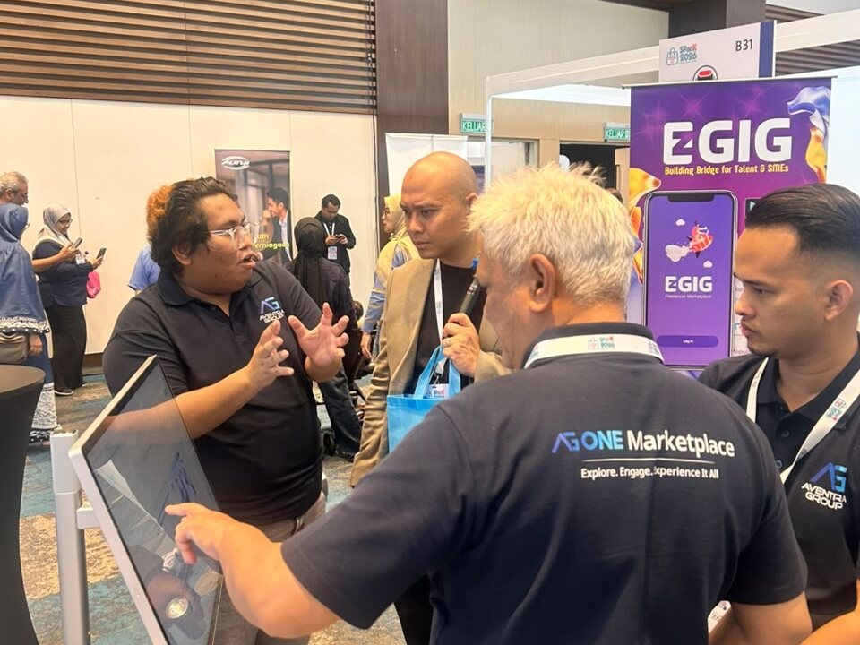
AG ONE Hire, the Intelligence Workforce System, dashboards and programmes.
View case studies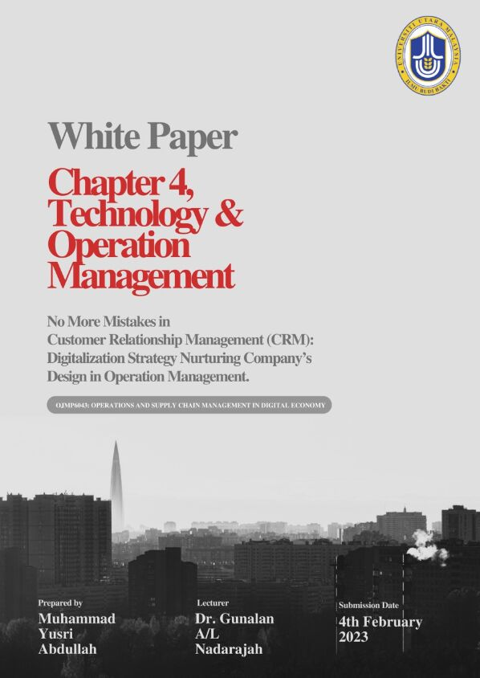
CRM as a sociotechnical system, and the electric vehicle race between Tesla and BYD.
Read the papers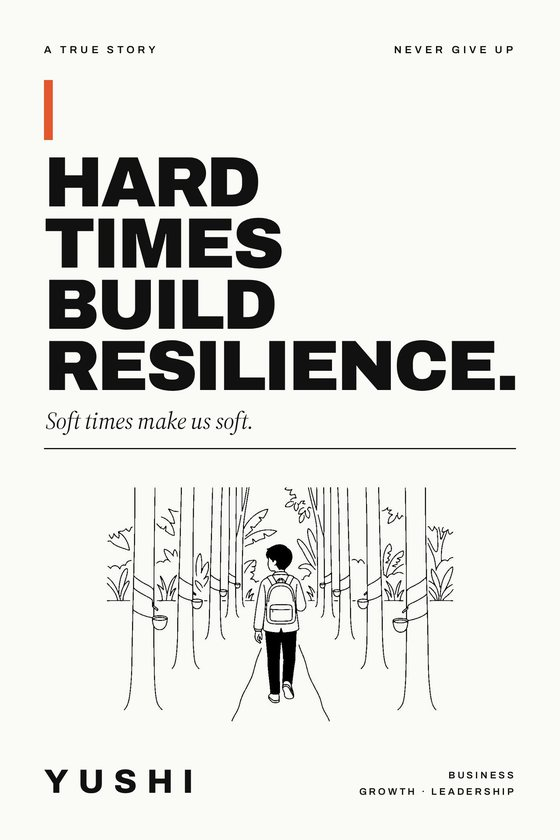
Hard Times Build Resilience, and my new novel The Painted Cake. Read both right here, page by page.
Start readingSelected work
Products, dashboards, programmes and research I've led or built.
Measured results from projects I led. Bars compare the result with the starting point.
AG ONE Hire · 2026
10xManaged the MVP end to end and ran Scrum in Azure DevOps, reaching 80% feature readiness for the first release.
Aventra Group · 2025
81→91%Redesigned the timesheet flow with two-level approvals and Power BI tracking.
Aventra Group · 2025
−30%Led the strategy and rollout of a new Leave Management System.
City University · 2021
−70%Standardised HR metrics and automated routine reporting tasks.
Netdomination · 2020–21
50–70%Handled 100+ cases a day and kept PayPal disputes below 3%.
Ministry of Health · 2022
90%Led National Health and Morbidity Survey fieldwork across Klang Valley schools.
UBIS Academy · 2018
+70%Grew preview sessions for FinTech programmes with UBIS University Geneva.
The products, programmes and roles behind the results.
Intelligence Workforce System
Aventra Group · Dec 2024 – Present
Hire → Retireend-to-end HRMSAG ONE Hire
Aventra Group · Apr 2026 – Present
End to endconcept → UAT → releaseOdela
Product management
PRD → Launchspecs to go-to-marketCSR · EduPreneur
LTT Global Communications · 2018
5partner universitiesPublic Speaking
2016 – Present
10 yrstraining & speaking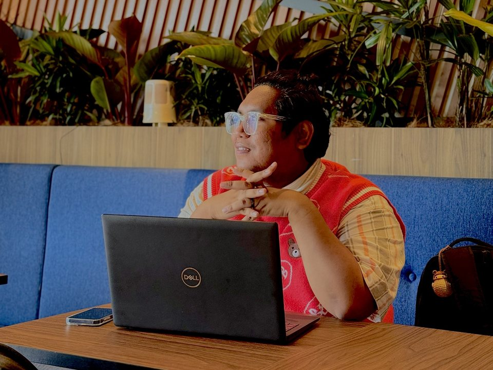
ProductApr 2026 – Present · Aventra Group
I'm the Product Owner for Aventra Group's hiring product. I run the recruitment pipeline end to end, from candidate tracking and interview scheduling to stakeholder updates, and take features from requirements through UAT to release.
2026 · Aventra Group
Led delivery of the hiring platform's first release, from MVP scope to go-live.
Dec 2024 – Apr 2025
Analysed HR system data, built Power BI dashboards and designed a two-level approval workflow.
Productivity up from 81% to 91%2025
Led the strategy and rollout of a new leave system, plus a workforce analytics dashboard for productivity and turnover risk.
Processing time down 30%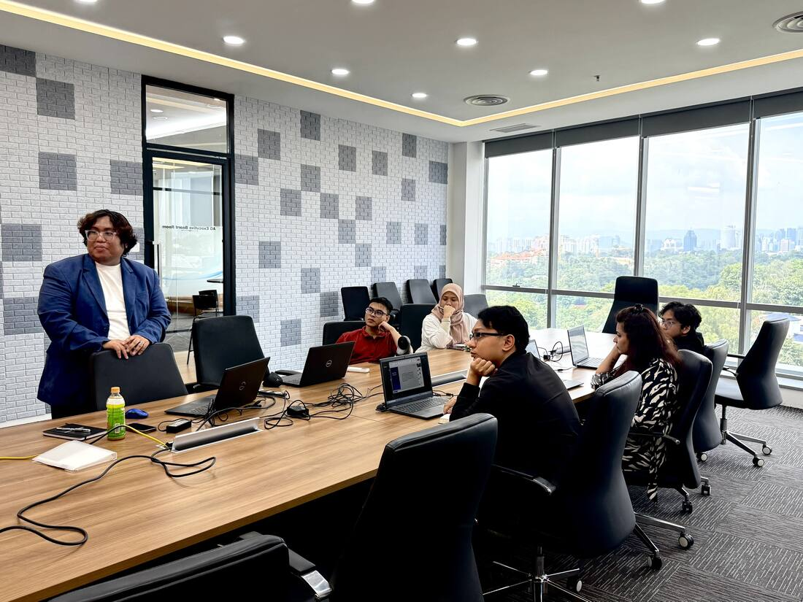
Data & BI2024 – Present
High-level dashboards built on Power Query, DAX, semantic models and row-level security, with API data feeds.
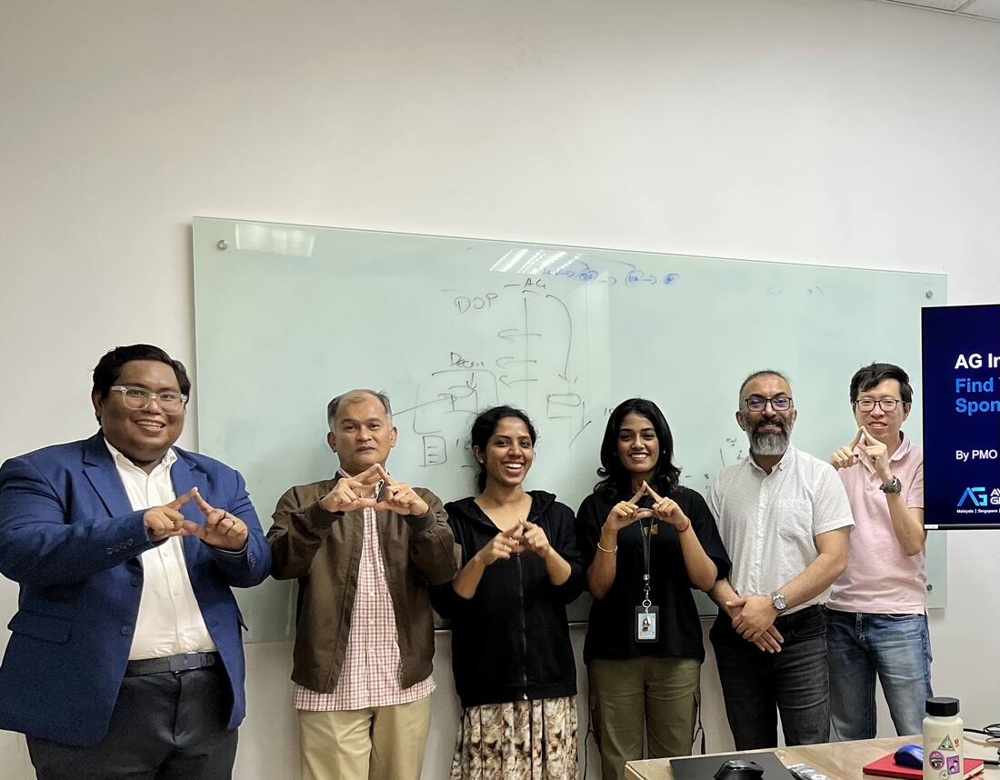
StrategyFeb – Sep 2024
Trained teams on Business Model Canvas, Idea Napkin, prototypes, BRDs, PRDs and Cost-to-Serve projections.
Dec 2023 · AirAsia Academy
An Iris dataset case study built as a Streamlit web app and shared on GitHub, plus a customer churn analysis in R.
Published on GitHubView on GitHub ↗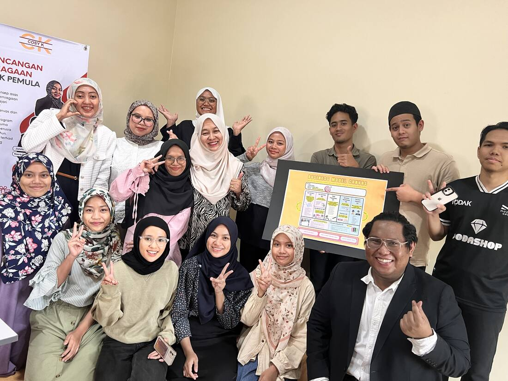
Strategy2023 – 2024
Market research, business planning and a full strategy for a Malaysian SME, ending in a youth business planning workshop.
Strategy delivered and a free youth workshop run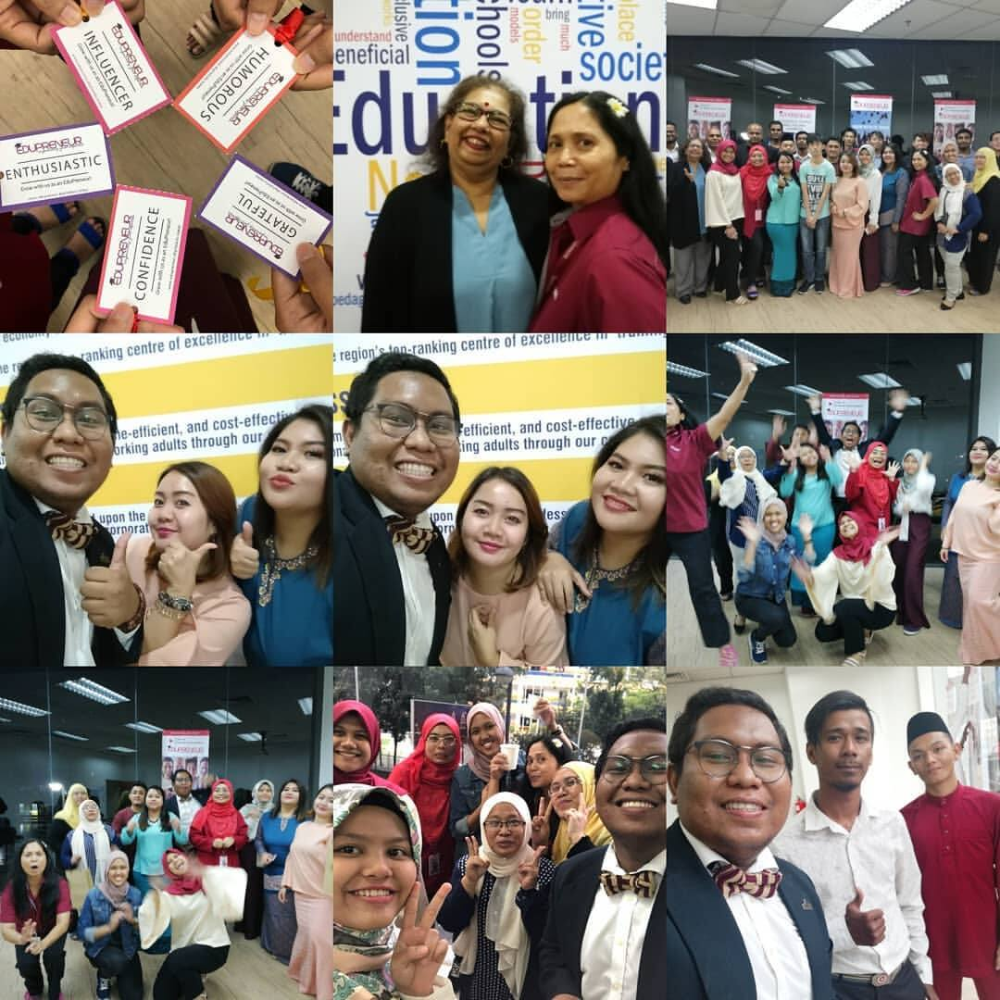
Community2018 · LTT Global
Designed and launched an education entrepreneurship programme with Taylor's University, UNIRAZAK and three more universities.
Launched with 5 universities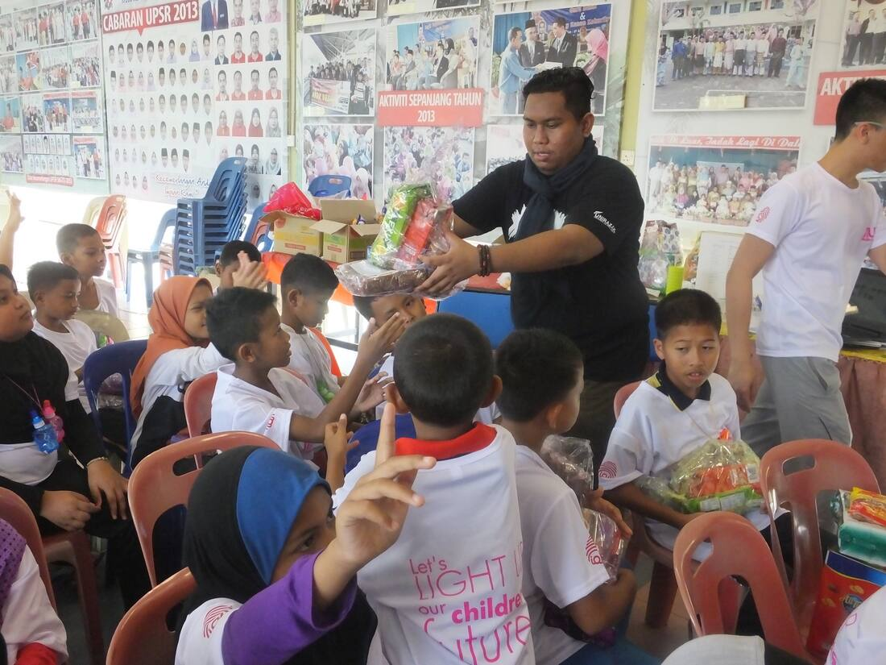
Community2017 – 2023 · Programme Director & Founder
Founded a UNIRAZAK volunteer platform and led its volunteerism mission for flood victims in Kelantan, building confidence skills across the community.
5+ years of volunteer missionsArticles
Two papers from my Master of Business Management at Universiti Utara Malaysia, written under Dr. Gunalan A/L Nadarajah and shared on my LinkedIn.
Digitalization strategy nurturing a company’s design in operation management
Written for Operations and Supply Chain Management in the Digital Economy. The paper treats CRM as a sociotechnical system and uses a Coca-Cola case study to show how change management and digitalization protect customer value across the whole relationship life cycle.
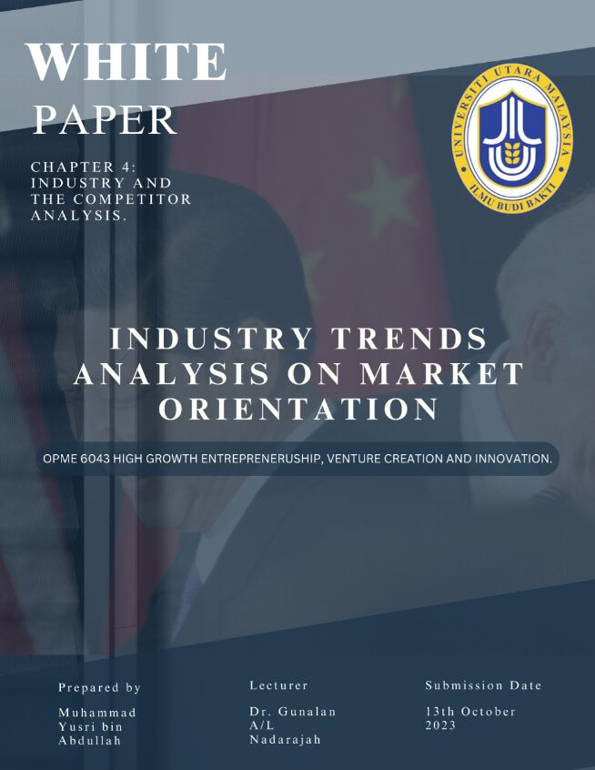
02OPME 6043 High Growth Entrepreneurship, Venture Creation and Innovation
A market orientation study of the electric vehicle race. It compares Tesla and BYD, looks at how artificial intelligence shapes the competition, and sets out the emerging strategies between China and the USA.
My book · A true story
Muhammad Yusri · Never give up
From a riverside house lit by a wick lamp to leading product teams in Kuala Lumpur. A true story in fourteen short chapters on how hard times build resilience, why comfort makes us soft, and what both teach about business, innovation and leading people.
“Di mana ada kemahuan, di situ ada jalan.”Where there is a will, there is a way.
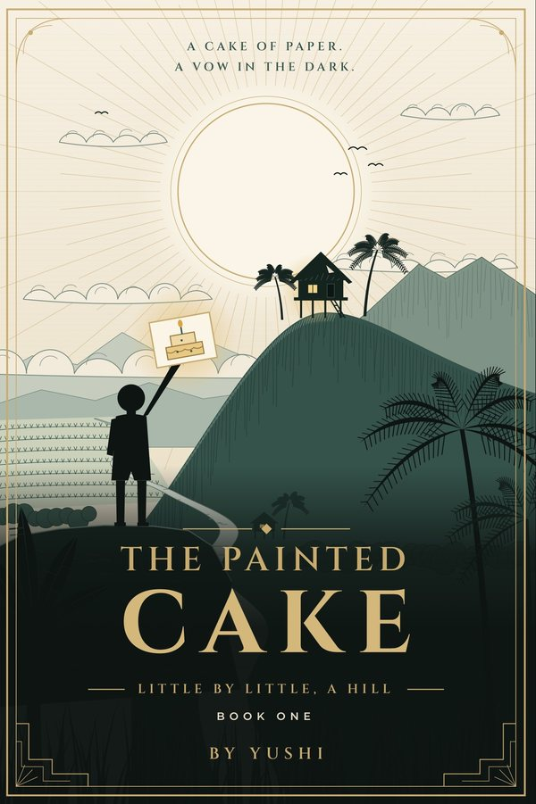
My second book · Literary fiction
Written as Yushi · Little by Little, a Hill · Book One
In a village where the paddy bows to the wind, a boy who was told he was not of the blood learns to carry his mother, his hunger and his vow, and, little by little, to raise a hill of his own. A coming-of-age story on belonging, motherhood, resilience, faith and education.
“Sedikit-sedikit, lama-lama jadi bukit.”Little by little, in time, it becomes a hill.
What I focus on
I build the systems behind the whole people journey: how an organisation finds talent, brings it in, runs it day to day and helps it grow, until the day someone retires.
Recruitment · AG ONE Hire
As Product Owner, I turn hiring from scattered emails and spreadsheets into one guided pipeline that recruiters, hiring managers and candidates can all follow.
Outcome: faster, fairer and fully traceable hiring
HRMS · Intelligence Workforce System
AG IWS is an end-to-end HRMS workforce system. It keeps one trusted record for every employee and automates the everyday work that used to sit on HR's desk.
Outcome: less admin, cleaner data, better decisions
Talent · Growth & ESG
Systems only matter if people grow inside them. I design learning, coaching and benchmarking that build capable, sustainability-ready teams.
Outcome: people ready for the next role, and the next decade
Calendar
Classes, talks and workshops I'm running next. Add any of them to your Google Calendar in one tap.
Event day
ESG & sustainability
Highlights from my Green CV Sustainability Report Card, an AI review of my CV by AG ONE Sustainability Intelligence (June 2026).
Top tier of sustainability-ready business leaders, and top 10% of sustainability-ready PMO professionals in the ASEAN Green Talent Benchmark.
Watch & listen
Find me on YouTube as @MonsiuerYush.
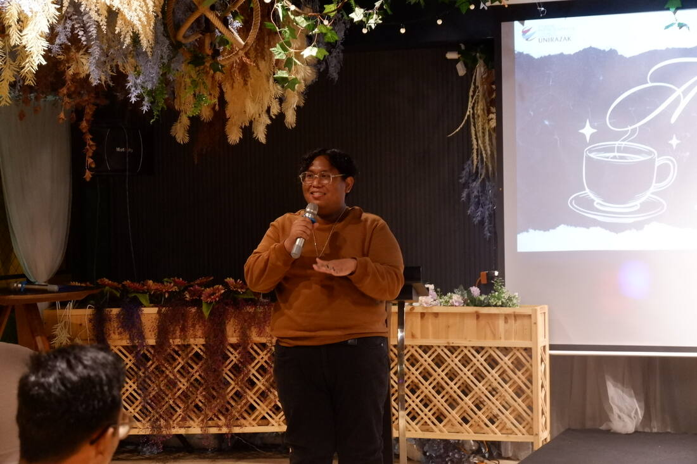
Featured videoWatch on my YouTube channelOpens YouTube in a new tab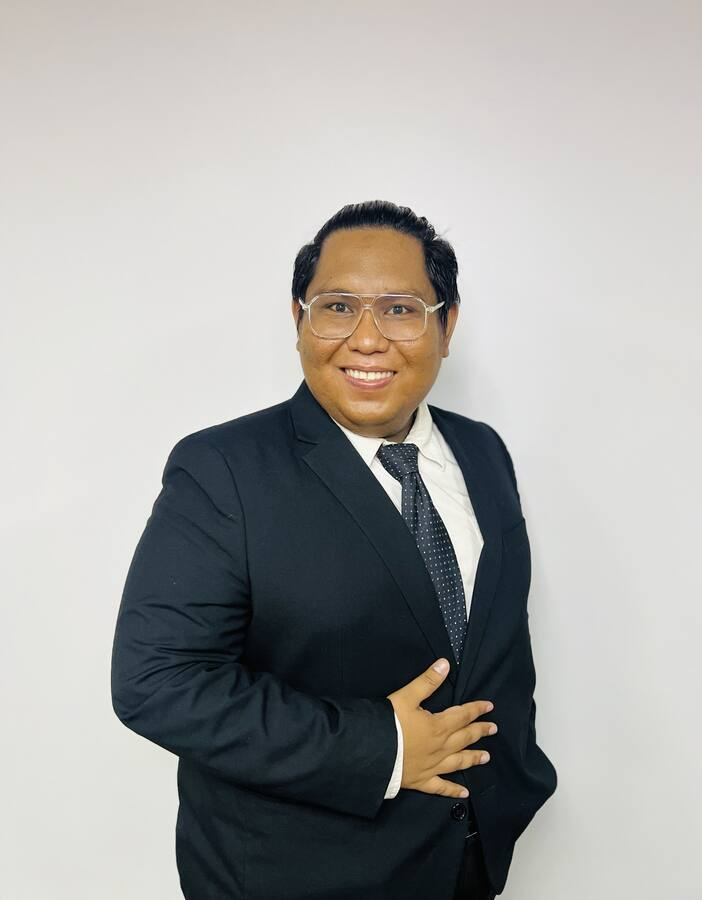
Kuala Lumpur, MYAbout me
"The hardest part of AI product work usually isn't the model. It's the people, the timeline and the trust."
I started out in public policy. I studied Government and Public Policy, earned a Master's in Business Management with a 3.95 CGPA, and worked in digital marketing, customer operations, HR and teaching before moving into product and PMO.
At Aventra Group I've built PMO frameworks for the Executive Chairman's Office, run AI portfolio governance and shipped dashboards leaders use every week. Now I bring that to AG ONE Hire.
Outside work I write, teach and volunteer, and I run business planning workshops for young entrepreneurs.
“No matter how many mistakes you make or how slow you progress, you are still way ahead of everyone who isn’t trying.”
Career
Five roles at Aventra Group in under two years, built on a career across marketing, operations, research and education.
Apr 2026 – Present
Aventra Group Sdn. Bhd.
Jan – Mar 2026
Aventra Group
Sep – Dec 2025
Aventra Group
Apr – Sep 2025
Aventra Group
Dec 2024 – Apr 2025
Aventra Group
Result: New timesheet workflow lifted monthly productivity from 81% to 91%.2023 – 2024
Universiti Utara Malaysia · Cosy K Enterprise
2022
Institute for Public Health, Ministry of Health
Result: 90% completion on a 105-question national survey.2021
City University of Malaysia
Result: Admin workload down 70% through automation.2020 – 2021
Netdomination Group
Result: 100+ cases a day, first response time down 50–70%.2018
LTT Global Communications
2018
UBIS Academy
Result: Preview session attendance up 70%.In pictures
Tap any photo to see it larger.
On stage
Keynotes, panels, workshops and corporate training in English and Malay.
Governance and ethics built into delivery from day one.
Portfolio governance, sprint audits and dashboards leaders use.
Hands-on planning for founders and intrapreneurs.
Experiential learning and community work for UN SDG 4.
Planning an event, panel or team workshop?
Invite me to speakGiving back
From my LinkedIn volunteering record and CV.
Razak Rangers, Universiti Tun Abdul Razak
Built a platform for experiential learning and teamwork, and led a volunteerism mission for flood victims in Kelantan to build confidence skills across the community.
Dec 2017 – 2023 · 5 yrs 2 mos
Non-Governmental Organisation
Shared experience at the Global Youth Peace Forum 2017 with International Peace Youth Group Korea.
2017
LTT Global Communications
Invited speaker for the UNIRAZAK Volunteerism Day.
Jul 2018
PKUP Kuala Lumpur
Social awareness advice and community storytelling for Persatuan Kelainan Kurang Upaya.
2018
Operasi Khidmat Masyarakat, UNIRAZAK
Led protocol and hosted the community service programme.
2016
UNIRAZAK · Ace Academy · Government schools
Taught confidence-building, then Maths and English to Indigenous and primary school students.
2016 · 2019 · 2022
Learning
Universiti Utara Malaysia · 2023–2024 · CGPA 3.95
Universiti Tun Abdul Razak · 2015–2017 · CGPA 3.38
Saito University College · 2012–2015 · CGPA 3.76 · Dean's List
Kind words
Recommendations from people I've studied and worked with, as published on my LinkedIn.
What stands out about Yushrie is his ability to apply what he learns in practical settings. After studying the Business Model Canvas, he went on to conduct workshops on this subject for aspiring entrepreneurs. He later pursued and earned a Six Sigma Black Belt certification accredited by AIGPE.View profile on LinkedIn
What struck me most about Yusri was his exceptional academic caliber and active participation in class discussions. He consistently demonstrated a deep understanding of complex concepts, contributing thought-provoking questions that enriched our debates.View profile on LinkedIn
An individual who knows what he wants, and is willing to work hard to achieve his ambition. Yusri loves to learn and is constantly keeping himself updated with the latest in technology. He is generous in helping others too. An asset to any organization.View profile on LinkedIn
He helped me through the entire period back when we were in the student representative team. His suggestions were always insightful, quantifiable and actionable. I highly recommend Yusri!View profile on LinkedIn
I have known Yusri from our undergraduate years. We are responsible for a number of social-outreach and student projects. He is a known team-player, with an aptitude for problem solving and conflict resolution.View profile on LinkedIn
I am very happy to write this recommendation for Muhammad Yusry Abdullah, whom we called Yus at the office and was our Digital Marketing Strategist & Community Building Head and our Digital Learning Impactor too in 2018.View profile on LinkedIn
Toolkit
Get in touch
Open to product, PMO and AI governance conversations, speaking and workshop invitations, and requests for my white paper.
No matter how many mistakes you make or how slow you progress, you are still way ahead of everyone who isn't trying.
Tony Robbins
Ikut resmi padi, makin berisi makin tunduk.
Be like the rice stalk: the fuller its grain, the lower it bows.
Malay proverb
Prologue
I was adopted as a baby. I did not know then what life had in store for me, and perhaps that was a mercy.
At seventeen, when most of my friends were busy with dreams and laughter, I was a labourer. My palms had hardened into calluses and my spirit was tired in a way no seventeen-year-old should know. In the same week as my SPM examinations, the exams that decide so much of a Malaysian teenager's future, my parents divorced. I sat at a school desk with a pencil in my hand and a broken home waiting for me at the end of the day. I stayed with my mother. We held on to each other in a small rented house by the river, where the wind moving through the trees at night seemed to whisper stories of survival.
Hunger became a regular visitor. It did not knock. It simply sat down at our table and waited. When there was no rice in the house, I went into the wild to look for food: siput sedut from the river mud, whatever fish I could catch, pucuk paku fern shoots and keladi pulled from the riverbank. Nature filled our empty plates when nothing else would. My mother's hand was broken and she could not work. Each time I came home with my shirt wet and my hands full, she watched me with quiet eyes, hoping I had found enough to keep the hunger away for one more day.
The rent was a modest RM100 a month. For us it was a mountain. When we could no longer climb it, we moved into a shack whose walls barely stood and whose roof showed us more stars than it kept out rain. Yet in that broken space, we made a home.
Birthdays came and went without candles or songs. On those days I drew a cake on scrap paper, coloured in the icing as best I could, closed my eyes and made a wish. I wished for a better life. I wished for a real cake I could taste. I wished for days when survival was not our only goal. For six months we had no electricity. We lived by the light of a wick lamp, its small flame throwing shadows on the walls like silent echoes of our struggle.
Through it all, hope stayed alive. It was a tiny ember, but it never went out.
I tell this story not for sympathy but for honesty. Everything that follows in this book, every stage, every certificate, every product I have helped to build, grew from that small flame by the river. If you are reading this in your own dark season, I want you to know one thing before anything else. A lamp is small, but it is enough to read by. And reading by a small light is how every great journey begins.
Sedikit-sedikit, lama-lama jadi bukit.
Little by little, in time, it becomes a hill.
Malay proverb
Introduction
There are two ways a person grows. One makes you stronger. The other makes you softer. For most of my life I chased the first, and I did not notice the second quietly arriving.
Strength is what you build when you keep showing up. It is the extra hour of study under a weak lamp, the late night before a deadline, the job you take because you need it and not because you want it. Strength is visible, and it is good. I needed it to survive.
Wisdom is quieter. It shows up as patience with a difficult stakeholder, as listening a little longer before you speak, as asking a student what they already know before you tell them what you know. Wisdom does not make you harder. It makes you gentler, and that gentleness is not weakness. It is strength that has learned where to point itself.
I am, by my own description, a late bloomer with a big curiosity. Nothing in my life was solved overnight, and no magic arrived to make it easier. It was a blended learning, a long process. I started from zero. From there I built my skills one by one, learned to work under pressure and slowly found the courage to attempt things I had never done before.
This book follows that path, from a riverside shack to building hiring and workforce products at the company where I work today. Along the way I was a labourer, a deputy prefect, a student leader, a conference secretariat, a Model United Nations delegate, a volunteer leader during floods, a teacher, a customer service agent, an HR executive, a researcher, a social entrepreneur and a product owner. None of it was a straight line. All of it taught me something about growth, about business and about how innovation really happens, which is through people.
I wrote this for anyone who feels they are behind. For the graduate whose first job has nothing to do with their degree. For the person answering a hundred emails a day and wondering whether any of it counts. It counts. Every role is training for the next one, if you are paying attention.
Hard times build resilience. Soft times make us soft. I did not choose my hard times, but I chose what to build from them. This is a true story about never giving up, and I hope it helps you keep going through yours.
The strong get stronger because they keep going. The wise get softer because they learn why they are going. I hope this book helps you do both.
Chapter 1
Before I had a career, I had discipline. It was not a virtue I chose so much as a necessity that chose me. When your family's next meal depends on you, you learn quickly that motivation comes and goes like the weather, but discipline stays.
In secondary school I studied in the science stream. I loved the quiet logic of it. Science trained my mind to be analytical, to test before trusting and to try a different approach when the first one failed. It made me curious about why things work, a habit that would one day turn me into a product analyst, though I could not have imagined that job then.
I was also appointed a deputy prefect. It was my first taste of being responsible for other people. A prefect's job sounds simple: keep order, set an example, support the teachers. But I soon learned that authority means nothing if the students do not respect you. Respect does not come pinned to your shirt with a badge. It is earned slowly, by being consistent, fair and present, day after ordinary day.
I came to believe that discipline is the key to success. Not talent, not luck, not connections, though all of these help. Discipline is the quiet engine that keeps running when everything else stops. It is opening a textbook after a day of labour, when your back aches and your eyes are heavy. It is keeping a promise when nobody would notice if you broke it.
There is a business lesson hidden here too. The most innovative companies are rarely the ones with the most ideas. They are the ones disciplined enough to execute the few ideas that matter. Discipline turns a dream into a plan, and a plan into a result.
Discipline is the bridge between goals and accomplishment.
Jim Rohn
Lesson: Talent opens the door, but discipline keeps you in the room. Build the habit before you need it.
Chapter 2
My first qualification was a Diploma in Security Management from the college where I began my higher education. I studied there from 2012 to 2015 and finished with a CGPA of 3.76. People are sometimes surprised that a product analyst started in security. I am not. Security taught me to look for risk before it arrives, and that habit has never left me.
Security is really the study of what can go wrong. You learn to walk into a room and ask, almost without thinking, where the exits are, who has access and what happens if one piece fails. Years later, writing risk registers and sprint audits, I found myself asking the same questions in a different language.
In 2015 I began my degree studies at my university, reading Government and Public Policy. Policy opened a wider window. Security asks how to protect a system. Policy asks what the system is for, whom it serves and whom it leaves out. My degree gave me a broad understanding of economic, legal, political and governmental institutions, and the interpersonal skills a public administrator needs to work well with people.
University was where I stopped being only a student. I joined the student activities bureau, and from 2017 I served on the Student Representative Council. I received an award for my accomplishments in those roles. I also worked while I studied, so my days rarely ended when the lectures did. Those three years were full of ups and downs, and they pushed me into more leadership roles and my first small steps in entrepreneurship. I lived by a simple motto: stop wishing, start doing. It was the only way I knew to take command of a life that had so often been decided for me.
In 2016 I was the emcee and a trainer for a community service programme, where I ran confidence-building sessions. It was the first time I stood in front of a group and tried to make them braver than they felt. I am not sure I was brave myself. I only knew I wanted them to be.
On 6 November 2017 I graduated with a Bachelor of Arts (Hons) in Government and Public Policy. That day I thought of the boy with the paper cake by the river. He would not have believed it.
Those years gave me two tools I still use every day: a security mind that spots the risk, and a policy mind that asks who it affects. Strength, at that age, meant collecting skills the way I once collected shoots from the riverbank. I did not yet know that the skill that mattered most was learning to care about the people on the other side of the plan.
Lesson: Your first field is never wasted. It becomes the lens through which you see everything else.
Chapter 3
The first time I truly stood up to speak, it was not for myself. It was to argue for a budget to help a community. I remember the dryness in my mouth, the paper trembling slightly in my hand, and the feeling that every face in the room was waiting for me to fail. I did not speak perfectly. But I spoke, and the community was heard. That was the day I learned that courage is not the absence of fear. It is having a reason bigger than the fear.
There is a photograph of me on a monitor at a national broadcaster's booth. I am holding a microphone, wearing a suit and a striped tie, reading as if the news depended on it. A handwritten sign below the screen says News Presenter Audition.
I did not become a news presenter. But that audition taught me something I use every week. A camera is honest. It shows every pause, every filler word and every moment you stop believing what you are saying. Standing in front of that small black lens forced me to speak clearly and slowly, and to mean every word.
In June 2015, at a national conference on Malaysia's 2013 general election, held at a hotel in Kuala Lumpur, I sat on a stage with a microphone in my hand. In 2017 I spoke as a panelist at an international youth peace forum organised with a Korean peace youth group. Each time the room was a little larger, and each time my hands shook a little less.
A voice is not a gift you are born with. It is a muscle. You train it by using it in rooms where you are slightly out of your depth, and then going back to rooms that are slightly bigger. Strength comes from repetition.
Wisdom came later. The best speakers I met were not the loudest. They listened to the question fully before answering it, admitted when they did not know and made the audience feel capable rather than small. In business, the same is true of the best pitches. Investors and customers do not remember the cleverest slide. They remember the person who understood their problem.
Bahasa jiwa bangsa.
Language is the soul of a people.
Malay proverb
Lesson: Speak often enough to become strong. Listen long enough to become worth hearing.
Chapter 4
Most of the work that makes a conference succeed is invisible. Name tags laid out in neat rows. Seating plans checked and checked again. Timings, the microphone that works, the guest who arrives at the wrong entrance and needs someone calm to meet them. I learned all of this as part of the secretariat for that national conference on the 2013 general election, held in June 2015 in Kuala Lumpur.
A secretariat is the team nobody thanks when things go right. If the programme runs on time, people credit the speakers. If it runs late, everyone looks for someone to blame. That taught me to measure my work by what did not go wrong.
In 2017 I served on the programme secretariat for a seminar at a regional counter-terrorism centre, on the dynamics of youth and terrorism. It brought together participants from many countries. In one photograph from that week I sit in the audience in a grey sweater with a blue conference lanyard around my neck, listening intently. It is one of my favourite pictures of myself, because it shows me learning.
I have done a great deal of backstage work that nobody thanked me for. The wise say we should work from the heart and expect nothing in return. I believe that, but I will be honest: in real life we all hope for something. What resolved that tension for me was a different kind of reward. I stopped measuring the applause and started measuring my own progress. Improving by one per cent each day is worth more than being ninety-nine per cent present and focused on nothing.
Behind-the-scenes work is also where I first practised what I now call product operations. You map every step, plan for the failure points and make sure the people on stage never have to think about logistics. In innovation, this is the unglamorous truth: every breakthrough depends on someone running the backstage well.
Lesson: If you want to lead the stage one day, learn to run the backstage first. And reward yourself with progress, not applause.
Chapter 5
At a Model United Nations conference I sat behind a country placard with a laptop, a notepad and a group of delegates I had met only that morning. Committee rooms like that teach diplomacy faster than any textbook. You have a position to defend, a clock running down and people across the table with positions of their own.
My first instinct was to win the debate. I prepared arguments, statistics and rebuttals, and I was proud of them. But resolutions do not pass because one delegate is the best speaker. They pass because enough delegates feel heard to sign. The real work happens in the corridors and in the small huddles around a laptop, where you quietly rewrite a clause so that someone else can say yes.
I learned there that you do not always need to be the winner. Solving a problem through mutual agreement creates better understanding than any victory. In the workplace we all have the right to agree or disagree, but we should not take every disagreement personally. Everything worth doing needs a team. And giving people credit is the finest way to show that everyone works under one roof.
The same year I joined that international youth peace forum as a panelist. Sitting with young people from other countries, I saw that the problems we cared about were the same. Only the accents were different.
I still think about Model UN when I run a requirements workshop. Engineering, design, quality assurance and business each arrive with a position, the way delegates arrive with their placards. My job as a product owner is the one I had at that committee table: find the clause everyone can live with, write it down clearly and move the resolution forward.
Bulat air kerana pembetung, bulat manusia kerana muafakat.
Water is shaped by the channel; people are united by consensus.
Malay proverb
Lesson: The strongest argument rarely wins. The most inclusive one does.
Chapter 6
In December 2017, during my degree studies, I founded a student volunteer team at my university, and I led it as Programme Director for more than five years. The idea was simple. Students learn teamwork best when the stakes are real, so we would learn by serving.
The mission I remember most took us to Kelantan to help families affected by floods. There is a photograph of me in our team shirt, handing aid packs to children in a room full of small chairs and bright posters. The packs mattered. But the part of the mission I am proudest of was the confidence work. We ran sessions to help the community, especially the young, believe in themselves again after the water went down. I understood those children. I had once been a child who needed someone to believe in him.
Disaster relief teaches you quickly that strength is not about you. You can carry boxes all day, but if you do not listen to what a family actually needs, you are only busy. The volunteers who made the biggest difference were the ones who sat down, asked questions and stayed patient.
Much of my sense of service came from one of my lecturers. She gave enormous time to volunteerism without ever asking what she would get in return. Instead, she asked us what value we needed to become catalysts for our community. That question changed how I thought about leadership. It is not "What can I get?" but "What can I help others become?"
The volunteer team also taught me how to build something that outlives a single event. A volunteer platform needs structure: roles, briefings, safety plans, follow-ups and new leaders coming through behind you. Without knowing the words for it, I was learning programme management, the same discipline that would later carry products from idea to launch.
In 2018 I carried that spirit further. I trained communication and leadership for Indigenous communities through a youth programme run with a national foundation, and supported a community organisation in Kuala Lumpur with social awareness and community storytelling.
Berat sama dipikul, ringan sama dijinjing.
Heavy burdens we shoulder together; light ones we carry together.
Malay proverb
Lesson: Service builds strength in the body. Listening builds wisdom in the heart. A leader needs both.
Chapter 7
The first time you teach something, you discover how little you understood it. That happened to me in a study skills class. Standing at the front of a university room in a suit, I watched students present to each other and realised my job was not to know everything. It was to help them find the way on their own.
I taught in many places after that. As a community teacher with a learning centre and in government schools in 2019 and 2022, I taught Mathematics and English to primary school children and to Indigenous students. One of my favourite photographs is of a classroom of children pulling faces at the camera. It was loud, untidy and entirely worth it.
In 2018, at a communications firm, I designed and launched an education entrepreneurship pilot with five universities, including a well-known private university and my own. I returned to my university's volunteerism day as a guest speaker, and I shared ideas on digital learning as a speaker with two online learning platforms.
Teaching made me softer in the best way. A child who is struggling with English does not need a stronger teacher. They need a more patient one. You lower your voice, slow down and find another way to explain the same thing, and then another, until the light comes on in their eyes. That patience is a skill, and it took me years to learn.
It also made me a better product person. Writing a clear user story is very like planning a lesson. You begin with what the learner, or the user, already knows and build one step at a time. Innovation that people cannot understand is innovation they will not use.
Melentur buluh biarlah dari rebungnya.
To bend the bamboo, begin while it is a shoot.
Malay proverb
Lesson: If you want to master something, teach it. If you want to become wise, teach it to someone who is struggling.
Chapter 8
Not every chapter of a career looks good on a stage. Between 2018 and 2022 I took jobs that paid the bills and taught me more than I ever expected them to. There was also a two-year intermission in Kuala Lumpur, a season when the path ahead was unclear and I could not see where it led. I do not hide those years. They are where I was tested.
In 2018 I worked in marketing and sales at a business academy, promoting FinTech programmes with its partner university in Geneva. We raised preview session attendance by 70 per cent. Then came a communications firm, where I was a digital marketing strategist and head of community building.
From February 2020 to June 2021, through the long months of the pandemic, I was a customer service executive and email specialist at an online services company. I resolved more than a hundred fraud, dispute and service cases a day on our helpdesk system. We kept payment disputes below three per cent and cut first response time by 50 to 70 per cent. The work was repetitive and often stressful. The queue never truly emptied. Angry customers do not care about your degree.
That job taught me empathy at scale. Behind every ticket was a person worried about their money. I learned to answer the worry first and the question second. It is the most useful product lesson I have ever learned, and I learned it in an inbox.
In 2021 I joined a private university as an HR executive. I standardised HR metrics and automated routine reporting, which cut administrative workload by 70 per cent. In 2022 I was a team leader and research assistant officer at a national public health institute. I coordinated fieldwork for a national health survey across Klang Valley schools and reached a 90 per cent completion rate.
When the intermission ended, I came back with a clear purpose: to become a social entrepreneur in the digitalisation of Industry 4.0, and an agent of change in any organisation I joined. I went to every training, conference and workshop I could find, to reskill, upskill and multiskill.
These were the years that made me strong. No audience, no applause, only work done well, every day, by someone nobody was watching. If you are in your unglamorous years now, keep going. Nobody is watching, which means you are free to become very good.
Di mana ada kemahuan, di situ ada jalan.
Where there is a will, there is a way.
Malay proverb
Lesson: The quiet years are not a detour. They are where the foundation is poured. Risking is better than regretting.
Chapter 9
In 2023 I returned to university. I enrolled in a Master of Business Management, specialising in the digital economy, and graduated in 2024 with a CGPA of 3.95. I was older than many of my classmates, and I carried years of real work into every case study. When I saw that final number, I thought of a boy studying by a wick lamp. It meant more to me than I can easily say.
Two white papers came out of that time, both written under my supervisor at the university where I did my master's. The first, in February 2023, was No More Mistakes in Customer Relationship Management (CRM). It treated CRM as a sociotechnical system and used a global soft-drink company as a case study in change management and digitalisation. I understood the subject from the inside, because I had lived it, answering thousands of customer emails.
The second, in October 2023, was Industry Trends Analysis on Market Orientation. It compared an American electric car maker with a Chinese rival, examined how artificial intelligence shapes competition and set out the emerging strategies between China and the United States. Writing it taught me that innovation is never only about technology. It is about reading the market, understanding the customer and moving before the window closes.
I put the theory to work at once. I advised a small local enterprise on market research, business planning and strategy, and I founded a small venture of my own to run a marketing strategy on a social commerce platform. In February 2024 I trained young entrepreneurs at a basic business planning workshop with the university's graduate business school. Social enterprise became my calling: offering a helping hand through business design and digital transformation.
Returning to study taught me a softer kind of confidence. In my twenties I wanted to prove I was clever. In the master's programme I was content to be the one asking questions. That shift, from proving to learning, was the moment I began to grow wiser.
Yesterday I was clever, so I wanted to change the world. Today I am wise, so I am changing myself.
attributed to Rumi
Lesson: It is never too late to be a student. The wise keep a beginner's mind.
Chapter 10
I joined my company in December 2024 as a PMO reporting and analytics analyst. In under two years I held five roles there, each one building on the last, alongside my work supporting human resources on risk management and on sustainability through lean practices.
My first significant win was the timesheet workflow. I analysed the HR system data, built business intelligence dashboards and designed a two-level approval process. Monthly timesheet productivity rose from 81 to 91 per cent. Next, I led the strategy and rollout of a leave management system that reduced manual processing time by 30 per cent.
I moved into PMO and strategic planning, ran business case hackathons and built PMO frameworks for the chairman's office. As an AI portfolio programme management executive, and then as a product manager, I wrote PRDs, BRDs and integration guidelines for a cloud marketplace. Today I am a Senior Product Analyst on the workforce system, an end-to-end HRMS that covers the employee journey from hire to retire, and Product Owner of our hiring platform, the product I now own.
People ask what the hardest part of product work is. It is rarely the technology. It is the people, the timeline and the trust. A dashboard is useless if leaders do not believe its numbers. A feature fails if the team that must use it was never asked what it needs.
This is where every earlier chapter paid its dividend. The security mind finds the risk. The policy mind asks who is affected. The secretariat runs the backstage. The Model UN delegate drafts the clause everyone can sign. The customer service agent hears the worry behind the request. The teacher explains it one step at a time. And the boy by the river remembers that every user is a person with a story.
Along the way I earned a Lean Six Sigma Black Belt and certifications in business intelligence, data analytics and product management. Yet the most important skill on any product team appears on no certificate. It is the willingness to listen before you build.
Lesson: Strong teams ship fast. Wise teams ship what people actually need.
Chapter 11
There are moments in every career when we find ourselves outside the circle: not invited into the room, not mentioned in the thread, not included on the committee. The door closes, the meeting goes on without you, and it is easy to feel unseen. But leadership, I have learned, is not about the seat we hold. It is about the sense we bring.
True leadership begins with awareness: of people, of purpose and of the quiet details others overlook. It is the ability to sense when a teammate is struggling before a word is spoken, or when an idea needs protecting before it is dismissed. Leadership is not authority. It is empathy in motion.
Leadership is also how we respond to exclusion. We can dwell in disappointment, or we can turn that energy into initiative. When we act from clarity rather than ego, our actions speak louder than any title. People begin to see leadership in us not because we claim it, but because they feel it.
I know my own strengths and my own edges. I can lead in every direction: upward, downward and across. I am detail-oriented by nature, and I always see sequences and consequences. That is a strength, but it can also keep my eyes fixed on the next step rather than the horizon. Part of my growth as a leader is learning to lift my gaze to the bigger picture, and to trust others with the details I would once have held tightly in my own hands.
So if you are reading this and feel left out of the table, remember this. Leadership is not about the seat you sit in. It is about the sense you bring into the room, even when the room does not yet include you.
Lesson: A title can be given. Leadership can only be earned, and it is earned in how you treat people.
Chapter 12
Leadership, at its core, is about navigating complexity: balancing roles, responsibilities and relationships. Yet many leaders fall into the trap of micromanagement, driven by a misunderstanding of accountability. It stifles productivity and leads to burnout, for the team and for the leader alike.
In a case study of micromanagement, I set out three principles for sustainable leadership:
Consider two everyday scenes. You urge your child to wake early for school, and the child protests from under the blanket, "But it's Monday." Or you order a latte and ask for no syrup, only to find it overly sweet. In both cases the problem is not only the outcome. It is communication and decision-making.
As leaders, communication and adaptability are everything. Saying "no" outright may solve a problem for a day, but it is not a strategy. Leaders should aim for structured decision-making, with a holistic approach that aligns with the wider business strategy.
The danger lies in the grey areas, the spaces where solutions exist but remain unexplored because of indecision or rigidity. Leaders who hesitate too long miss the very opportunities where growth and innovation live.
A well-known bestseller on attitude reminds us that leadership is not only a matter of skill but of mindset. A structured leader focuses on adaptability, clarity and continuous improvement. As one scholar observed, "We don't have business problems; we have personal problems that reflect in our business." Unresolved personal challenges quietly become professional inefficiencies.
Leadership is not about perfection. It is about navigating imperfection with purpose and grace.
Lesson: Trust is the opposite of micromanagement. Set direction, then let your people walk.
Chapter 13
When someone comes into your life, appreciate them. Do not ignore them once you have what you wanted.
Friendship is harder than it looks. We spend years searching for the best people, and if we demand perfection from them, we should first look into ourselves, for none of us is truly perfect.
Some people draw a border around their friendships. I will stay with him because I can use his ability. I will stay with her because she treats me well. I will stay until he is useless to me. Imagine playing a part with someone's feelings and calling it friendship. Once that trust breaks, it never returns with the same energy. Something in the room changes, and both people feel it.
I have chosen a different path. Even when kindness is met with disrespect, I do not stop being kind. Sometimes I simply remain silent, so that my pain can heal in the shadows rather than turn into bitterness in the light.
What does empathy mean to me? It means to feel with someone: to listen, to withhold judgement and to ask questions. Empathy sounds like "How did that make you feel?" or "Do you want to talk about it?" It takes time and it takes consideration. But it creates comfort and connection, and connection is the foundation of every team, every customer relationship and every product people love.
I learned the deepest empathy at home. My mother worked so hard for so long, and never once made me feel I was not worth it. In a house lit by a single flame, she made sure I never felt like a burden. Whatever softness I have, I learned first from her.
Budi bahasa budaya kita.
Courtesy and kindness are our culture.
Malay saying
Lesson: Appreciate people while they are with you. Empathy is not a soft skill. It is the hardest skill, and the most valuable.
Chapter 14
There is a quote I return to whenever I feel slow:
No matter how many mistakes you make or how slow you progress, you are still way ahead of everyone who isn't trying.
Tony Robbins
That sentence holds the first half of a truth I have lived. The strong get stronger because they keep trying. Every hungry day by the river, every audition, every committee session, every flood mission, every inbox and every sprint added a little more strength. None of it was wasted, not even the parts that felt like detours at the time.
The second half, that the wise get softer, took me much longer to understand. When I was younger I thought wisdom would make me sharper, quicker to answer and harder to argue with. It did the opposite. The wiser I became, the more I paused. I asked more questions. I said "I don't know" more easily. I became gentler with students, with colleagues and, slowest of all, with myself.
Right now I am still a beginner in many things. I am learning perseverance, resilience and calm. I am learning to let go of the need to control every detail and to see the bigger picture. I am learning that improving by one per cent a day, quietly and without applause, is the surest way to climb.
Softness is not the absence of strength. Lao Tzu wrote that nothing in the world is softer or weaker than water, yet nothing can surpass it in overcoming the hard and the strong. A river is soft, and it carves valleys. I grew up beside one, drew my food from it and listened to it every night. I should have known.
Ikut resmi padi, makin berisi makin tunduk.
Be like the rice stalk: the fuller its grain, the lower it bows.
Malay proverb
So here is what I believe now. Build your strength through effort, because no one can do the work for you. Then let wisdom soften how you use it. Speak, but listen first. Lead, but serve first. Build products, but understand people first. And when you are afraid, remember that risking is better than regretting.
The strong get stronger. The wise get softer. The best of us, in time, become both.
Afterword
I hope my story has given you permission to see your own path as one connected journey, the detours included. Take a quiet hour, find a corner with good light, and use these questions to write a few pages of your own.
Keep trying. Keep listening. The strong get stronger, and the wise get softer.
Kuala Lumpur
Through hardship, Muhammad Yusri Abdullah has tried hard to win and has faced many losses on the way to the life he wanted. His key strength is an unstoppable mindset and a constant drive to learn, relearn and unlearn.
He studied in the science stream at secondary school, where he served as a deputy prefect. He holds a Diploma in Security Management, and on 6 November 2017 he completed his degree studies with a Bachelor of Arts (Hons) in Government and Public Policy. At university he served on the Student Representative Council, received an award for his accomplishments and founded a student volunteer team that he led for more than five years.
He later earned a Master of Business Management, specialising in the digital economy, with a CGPA of 3.95, and wrote two white papers on CRM digitalisation and market orientation.
Today he is a Senior Product Analyst on a workforce system and Product Owner of a hiring platform at a company in Kuala Lumpur, a Lean Six Sigma Black Belt, a public speaking trainer and a social entrepreneur focused on business design and digital transformation.
He is an optimist who sees problems as opportunities: passionate, adaptable and energetic, equally effective alone or in a team, and always eager to take on a new challenge.
Connect with the author
Portfolio: https://claude.ai/artifact/MPv8jLR6ZPoxqcmKJ6mmnk
LinkedIn: https://www.linkedin.com/in/yushabdullah
YouTube: https://www.youtube.com/@MonsiuerYush
The Painted Cake — Little by Little, a Hill, Book One.
Written by Muhammad Yusri Abdullah, under the commercial name Yushi.
"All the world's a stage, and all the men and women merely players."
William Shakespeare, As You Like It
In a land of monsoon evenings and paddy fields that bowed to the wind, there lived a man who had learned early that a life is not given whole. It is gathered, as a fisherman gathers his net, knot by patient knot. His name was Ilham, which in the old tongue means inspiration, though for many years he could not have told you why.
The elders of his land had a saying: Sedikit-sedikit, lama-lama jadi bukit. Little by little, in time, it becomes a hill. And so it was with Ilham, whose story began not with thunder, but with small things.
Poem
Not given whole, but gathered slow,
a knot for every tide;
the net grows strong from what we owe
to those who stood beside.
So read these pages, stone by stone,
a hill from dust and rain;
no man arrives where he is known
except by roads of pain.
Chapter 1
"We are all of us stars, and we deserve to twinkle."
Marilyn Monroe
Ilham was born in a small village where the paddy fields met the sky, though his roots lay across the northern border, in the Land of the Free. The family that raised him was not the family that bore him. He did not know this at first. Children seldom question the arms that hold them.
But villages have long memories and short mercies. The whisper came early, and it came often: He is not of our blood. Each time it fell on him like rain on a roof without eaves. He began to wonder, in the silent way of small boys, why he was here at all, and why he was still here.
Then, once in a while, strangers came. A woman with eyes he somehow knew. A boy who wore his own face, a few years older. They sat with him, smiled, touched his hair. Later he would learn that she was the mother who bore him, and the boy was his brother, one of three siblings scattered like seeds on the wind. They came, and then, like morning mist over the padi, they were gone, and they never came again.
He kept those visits as a beggar keeps gold, turning them over in his memory long after their light had faded. Even as a grown man, a quiet ache would rise in him: It was not fair. Where do I belong in this world?
Yet the cradle he was given, though borrowed, was warm. Air dicincang tidak akan putus. Water cut with a blade is never truly divided.
"The wound is the place where the Light enters you."
Rumi
Poem
They came like rain in the dry season,
a mother's face, a brother's hand;
they gave no word, they left no reason,
and vanished north, to the free land.
The boy still waits beside the door
though he has long since learned to stand;
some hearts are built to ache for more,
and some are built to understand.
Chapter 2
"Whatever you can do, or dream you can, begin it. Boldness has genius, power, and magic in it."
attributed to Johann Wolfgang von Goethe
Long before he knew the words profit or ledger, Ilham had the instincts of a merchant. At seven he sold fruit through the village lanes, holding each mango up to the light as though it were a jewel. At ten he stood at a little roadside stall flipping burgers while the evening traffic hummed past. At night, by the glow of a kerosene lamp, he counted his coins and kept careful sums: the first accounts of a life that would one day be measured in larger numbers.
Di mana ada kemahuan, di situ ada jalan.
Where there is a will, there is a way.
But a small flame draws moths as well as admirers. Some of his cousins and nieces watched the busy little boy with narrowed eyes. Their words turned to quarrels, and the quarrels sometimes turned cruel. His grandmother, who might have shielded him, had already gone to her rest, and on the worst of those days no one came to his side. Once, in the middle of a shop, he faced a jeering cousin and declared, If you want to fight me, then fight me in front of my father and yours! The anger that rose in him that day was new and hard, like the first frost on soft ground.
His mother, wiser than all of them, took his face in her hands. Do not mix with them, my son. Focus on yourself. Then she moved him to a new school, and a new page turned.
Jauhi orang yang dengki, dekati orang yang ikhlas.
Keep away from the envious; draw near to the sincere.
Poem
A boy, a basket, and the sun,
a coin for every fruit he sold;
he did not know what he'd begun:
he only knew his hands could hold.
Let envy bark along the lane,
let cousins sneer and doors be shut;
the merchant counts his loss and gain
and plants the seed inside the nut.
Chapter 3
"Childhood is the kingdom where nobody dies."
Edna St. Vincent Millay
There is a memory older than the others, shining like river water in the afternoon sun. Ilham was six. Without a word to his mother, he slipped away with his friends down the muddy path to the river. He loved water the way other children love sweets, and he plunged in laughing.
Then the current took his breath. Water filled his throat, the sky tilted, and for a moment the whole world went quiet and green. A friend's hand reached down through the water, caught him, and hauled him back into the light, coughing and alive.
The mothers came running, scolding all the way. Why don't you ever listen? There were sharp words and a smack or two, but beneath the scolding ran a love so fierce it frightened them. Years later he would smile at the memory: They cared for us. Oh, how they cared.
For it was a village that raised him. When his mother went out to work, her friends fed him and watched over him. They were angels without wings, sent quietly to fill the gaps his father left. And at school, his truest friends were mostly girls, who listened when the boys only wanted to wrestle and run. He had no brothers beside him, yet he was never wholly alone.
Bagai aur dengan tebing.
Like the bamboo and the riverbank, each holding the other up.
"It takes a village to raise a child."
African proverb
Now, as a grown man, he looks back on that kingdom of childhood and finds the adult world a very different country.
Poem
The river took me for a breath
and gave me back a boy;
I learned how close we live to death
and how close death to joy.
A friend's hand in the green below,
a mother's voice above:
I did not drown. And now I know
the other name of love.
Chapter 4
"A mother's arms are made of tenderness, and children sleep soundly in them."
Victor Hugo
Every morning, before the sun had lifted itself above the coconut palms, Mak was already awake. Rice steamed in the pot. His school shirt lay pressed and folded. Her hands, rough from labour, smoothed his hair before she sent him into the world. She gave him everything she had, and Ilham, the boy who did not share her blood, grew up knowing beyond any doubt that he was beloved.
Kasih ibu membawa ke syurga.
A mother's love carries one to paradise.
The world beyond her doorway was less kind. At school a boy took Ilham for easy prey, sensing in him something soft. When her son came home with his sorrow, Mak rose like a lioness. She marched to the boy and demanded, Why do you torment my child? Then she went straight to the boy's father.
What followed was a strange and beautiful thing. The two families, once at odds, sat down together and made peace. The tormentor became a friend of the household, and in the years of high school he became Ilham's shield, standing between him and anyone who meant him harm.
"Do I not destroy my enemies when I make them my friends?"
Abraham Lincoln
Air yang tenang jangan disangka tiada buaya.
Do not assume still water has no crocodiles; and do not assume a hard heart cannot soften.
Poem
She did not carry me nine months,
she carried me for life;
she fed me rice and sang me once
through every kind of strife.
And when the world came at her son
with fist and sneer and shame,
she stood, a lioness, and won,
and called my enemy by name.
Chapter 5
"Courage is not the absence of fear, but rather the judgement that something else is more important than fear."
Ambrose Redmoon
The house had never been quiet. Since Ilham was small, his father and mother had fought, and his father's temper burned hot and quick, like dry grass in the dry season. The boy learned to read the weather of a room before he learned to read his schoolbooks.
One night, Mak walked the long road to buy rice, for the shop was far and the sack was heavy. She returned late beneath the stars to find every door of the house barred against her. Ilham crept to the latch in the dark and eased it open, inch by inch, to let his mother in.
His father's fury broke like a storm. Hard words fell on the boy, and when that fury turned toward his mother, Ilham stepped between them, a slender reed facing the gale. He held his ground. He did not bend.
Not long after, in Ilham's sixteenth year, the marriage broke. His father and mother no longer spoke with one voice, and the house split like a dry riverbank in the monsoon. Mak was wounded to the bone. When his father asked whom he would live with, Ilham answered without a heartbeat's pause: My mother. She is everything to me.
So the two of them carried their lives to a small house beside a river. It was a humble roof, but it was theirs.
Bumi mana yang tidak ditimpa hujan.
Upon which earth does the rain not fall?
Poem
A latch, a hand, a midnight door,
a mother in the cold;
a boy who'd never known before
how heavy hearts can hold.
He chose her then, he chose her still,
through every storm and shame;
some loves are born, and some are will,
and both deserve the name.
Chapter 6
"Be kind, for everyone you meet is fighting a hard battle."
attributed to Ian Maclaren
Ilham was away at his school hostel when word came: Mak had fallen, and her arm was broken. He went straight to his warden. Please, let me go home. My mother needs me.
That week, for the first time in his life, he stood at the stove. His hands were clumsy and the soup was simple, but no feast in any palace was ever served with more love. He fed her, washed the pots, and watched over her as she had once watched over him. For the first time, he felt it: I can protect my mother.
But fate was not finished. In time he discovered that a woman his mother had called a friend had been working quietly behind her back, and had taken her place at his father's side. Of all the wounds, this one cut deepest, because it came from a hand Mak had trusted.
Harapkan pagar, pagar makan padi.
You trust the fence to guard the rice, and the fence devours it.
Ilham watched his mother carry that betrayal in silence, and he learned something no school could teach him: that loyalty is rarer than gold, and worth more.
"The best way to find out if you can trust somebody is to trust them."
Ernest Hemingway
Poem
I did not know the salt from sugar,
I did not know the flame;
I only knew her arm was broken
and so for her I came.
The soup was thin, the bowl was chipped,
my hands were shaking still;
she drank it slowly, sip by sip,
and smiled, and drank her fill.
Chapter 7
"Hope is the thing with feathers that perches in the soul, and sings the tune without the words, and never stops at all."
Emily Dickinson
When the river house could hold them no longer, mother and son climbed to an abandoned house on a hill, pressed close against the mountain. There was no electricity. Food was scarce, and clean water scarcer. For six long months they lived by the light of the moon and whatever candles they could spare.
Once the family had owned a good house, a car, a motorcycle, and land that stretched green beneath the sky. Now there was nothing. Mak worked from dawn until long after dark. At the hostel, Ilham lived on ten ringgit a month, spending each coin as carefully as a prayer, grateful for the meals the government provided.
When his birthday came, there was no cake. So he took a sheet of paper, drew a cake upon it, and painted it in bright colours. Then he held it up to the empty room and declared: This is my birthday.
In the darkness of that house he made a promise to God. One day, I will succeed. And he studied as if his life depended on it, because it did. He was not first in his class, but he was a good student, the kind who joined every event and gave each one his whole heart.
And on certain nights, in that house without light, mother and son did something no one would have believed: they laughed together. Hunger could not take that from them, and neither could the dark.
Berakit-rakit ke hulu, berenang-renang ke tepian; bersakit-sakit dahulu, bersenang-senang kemudian. Raft upstream first, then swim to shore at ease; endure the pain now, and joy will follow.
"Verily, with hardship comes ease."
Al-Quran, Ash-Sharh 94:6
Poem
No candles burned, no sugar rose,
no friends came up the hill;
I drew a cake in red and gold
and called it birthday still.
God, You were the only guest
who heard me make my vow:
one day I'll stand where I was blessed.
Look, Mak. I'm standing now.
Chapter 8
"A friend to all is a friend to none."
Aristotle
In the high school years there were two friends. With the first, Ilham shared the easy closeness of youth, the kind that seems as if it will last forever, until one day, without a reason either could name, it simply did not.
The second friendship began in conflict. Ilham teased the boy once too often, and the boy's patience snapped in a hard shove that left them both shaken. Ilham stepped back, and the teasing stopped. Then, as happens only in the best stories, the boy came to him with an open hand. I'm sorry. Let us be friends again.
Not long after, in the crowded dining hall, that same boy stood and spoke to everyone: Leave him alone. He is my younger brother. Their families came to know one another, and for a while the boy who had no siblings beside him had a brother.
When the scholarships came, the elder went first. Take care of yourself, he told Ilham. They had made a promise: whenever one fell, the other would lend a hand. But years later, when Ilham was in need and asked to borrow a little money, the answer came back cold. I don't print money. Find it yourself.
So he was alone again among his books. And from that bitter cup he drew a lesson he would carry all his life: What must be done, I will do myself. I will be no one's burden. People change, he understood. Hearts change. A man must walk on regardless.
Kawan ketawa senang dicari, kawan menangis sukar ditemui.
A friend to laugh with is easily found; a friend to weep with is rarely met.
Poem
You called me brother in the hall
before a hundred eyes;
I thought that word would hold through all
the seasons and the skies.
But words are leaves, and leaves will fall,
and some trees cannot stay;
I keep the word. I keep it all.
I simply walk away.
Chapter 9
"Two roads diverged in a wood, and I, I took the one less travelled by, and that has made all the difference."
Robert Frost
At school Ilham was a riddle to the others: diligent, well-mannered, yet set apart. Some pitied him; others kept their distance. But kindness, like water, finds its way through stone. One friend, seeing his quiet sorrow, went to his own tuition teacher and said, Let him come too. From that small mercy a fire was lit. Ilham taught himself to learn quickly, as if each lesson might be the last he was given.
When he asked his father for money for books, he received only a few coins. He bought the book anyway and read it the way a starving man eats bread. He knew one truth with his whole being: without education there was nothing. Education would make the world respect him, and respect his mother too.
Ilmu itu pelita hidup.
Knowledge is the lamp of life.
When his results came, many universities opened their doors, engineering among them. On registration day he waited outside a friend's house for his father, who had promised the fee. He waited as the morning grew old, as the shadows grew long, until the day itself was done. His father never came.
So Ilham packed his few things and went to the town, resolved to become a simple labourer and work until his last breath. But Providence, it seems, had been reading over his shoulder. A small notice caught his eye: Work while you study. He applied, and soon an officer came to his mother's door holding a scholarship.
He had dreamed of becoming a doctor. Instead he was led to law enforcement and forensic study, and for three hard years he studied crime and the law that answers it. Then he returned home to serve his practical at the district office as a law officer.
Manusia merancang, Tuhan menentukan.
Man plans, but God decides.
"And it may be that you dislike a thing which is good for you."
Al-Quran, Al-Baqarah 2:216
Poem
I waited at the gate all day
for footsteps that would come;
the sun went down, and on its way
it left my heart gone numb.
But doors I never thought to knock
swung open in the night;
I wanted healing's white coat;
God gave law, and gave me light.
Chapter 10
"Tell me and I forget. Teach me and I remember. Involve me and I learn."
attributed to Benjamin Franklin
Ilham felt his lamp was not yet bright enough, so he studied again, this time a degree in governance. Those years were not gentle. There were nights with too little to eat, and late shifts after lectures when he ate whatever was left on the table and never once complained. He trusted God, and he kept walking.
His first post was in marketing, a strange harbour for a man trained in governance. Why am I here? he wondered. But life, like a good author, plants seeds early that bloom only in the final act.
Then came a lecturer, a woman of rare conviction, who refused to let him hide in comfortable corners. She trained his voice and sharpened his spirit until the quiet boy from the hill could stand tall before any audience. Their bond never broke; they speak to this day.
For eight years he walked through thick and thin. In digital marketing he learned to build networks. Before students, as a teacher, he learned community. As a public speaker he found his voice. In customer service he learned to untangle other people's troubles; as a researcher, to find the gaps; in human resources, to help people claim what was rightfully theirs. His employers loved him, but love does not pay the rent, and when the wages fell short he moved on. Little by little, he began to give back to the mother who had given him everything.
He made mistakes, many of them, but he gathered each one like a stone for the foundation of a house not yet built. Then he went back to study once more, at postgraduate level.
Alah bisa tegal biasa.
What is hard becomes easy through practice.
Poem
She did not hand me answers; no,
she handed me a stage,
and said: Now speak. Let the world know
the story on your page.
My knees were water, voice was thin,
my hands could hardly hold;
but something rose from deep within
and what was lead turned gold.
Chapter 11
"The illiterate of the twenty-first century will not be those who cannot read and write, but those who cannot learn, unlearn, and relearn."
Alvin Toffler
Then the great plague swept across the world. Cities fell silent, streets emptied, and every man was left alone with his own four walls and his own thoughts.
Ilham had always called himself a non-technical man, a man of words, people and persuasion. But in that stillness he opened a new book written in a strange new tongue: code. Line by stubborn line, he taught himself to become a data analyst. Where once he had read faces in a crowd, now he learned to read the patterns hidden in numbers.
He learned. He unlearned. He relearned. He became a student again at the very moment the world stood still, and he discovered that the fast learner the tuition teacher had awakened years ago had never truly gone to sleep.
From data, the road led on to the newest frontier of all: artificial intelligence. He joined a technology company and rose to become a senior executive in AI. Today, as a senior product analyst, he helps products and ideas take their first breath and grow.
Belakang parang pun, jika diasah, lagikan tajam.
Even the blunt back of a machete grows sharp if you keep honing it.
Poem
When all the world had locked its door
I opened one inside;
a language I'd not known before,
with logic as its guide.
The boy who counted mango coins
now counts in ones and zeros;
a different road, the same old joints,
the same old quiet heroes.
Chapter 12
"I am not what happened to me. I am what I choose to become."
attributed to Carl Jung
A man's story is not told by his titles. It is told by his reasons.
Why this road? Because somewhere on that hill without light, a boy had vowed not merely to survive, but to lead. One day he would build something of his own, a venture born of his own vision. He would be a man who could not be bent, with a dream that was more than a dream: a plan, held steady toward the future. And he would not rise alone. He would lift others with him, helping them sharpen their skills and find their own roads.
Hendak seribu daya, tak hendak seribu dalih.
Where there is desire, there are a thousand ways; where there is none, a thousand excuses.
He had learned that what one wants is hard to win, and it rarely arrives by the road one expects. Yet he never doubted this: God is not cruel. God knows you better than you know yourself. A man may draw his map, but the Almighty knows the land.
So his counsel to those who would follow is simple. Do what you can. Do not break yourself against the impossible; know your limits. Every road you have walked will one day serve the road ahead. The merchant, the law officer, the marketer, the teacher, the speaker, the analyst: none of them was wasted.
His hardships did not diminish him; they wrote him. A family that broke. Friends who believed, and friends who turned away. So many things that were never truly his. Yet still he loves to share, to sit among friends, to open his circle wide. Let those who hate, hate; let those who doubt, doubt. He knows what he is doing.
"Know thyself."
Inscription at the Temple of Apollo, Delphi
And so we leave him here, on the threshold. The boy who painted his own birthday cake has not finished drawing. The river still flows past the little house; the hill still stands against the mountain; and somewhere, a mother's prayers are still being answered.
Sedikit-sedikit, lama-lama jadi bukit.
Little by little, in time, it becomes a hill.
Poem
They said I did not share their blood;
they said I'd never rise;
I built my hill from rain and mud
and stood beneath the skies.
So if you're small, and if you're lost,
and no one knows your name:
keep drawing cakes, whatever the cost.
One day you'll light the flame.
Here ends the First Book. The story continues in Book Two.
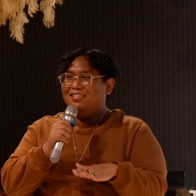
Yushi is the commercial name of Muhammad Yusri Abdullah, a writer and product analyst based in Kuala Lumpur, Malaysia, who works where people, data and artificial intelligence meet.
He was born in Malaysia, with roots across the northern border, and raised in a small village by an adoptive mother who gave him everything she had. He sold fruit at seven and burgers at ten, lived for six months in a house without electricity, and survived on ten ringgit a month at a school hostel. A scholarship opened the door that money could not: three years of law enforcement and forensic study, a degree in governance, and later a master's in business management.
His working life has been a long apprenticeship in many rooms: marketing and digital marketing, teaching, public speaking, customer service, research and human resources. During the pandemic, a self-described non-technical man taught himself Python and became a data analyst. That road led him into artificial intelligence, and today he helps grow products and innovation as a senior product analyst. He describes himself as a business sustainability practitioner, focused on ESG, digital transformation and AI. One day he hopes to found a venture of his own, to keep studying, and to help others sharpen their skills and find their own roads.
I wrote this book for my mother. She did not carry me in her womb, but she carried me through every storm that came after, and I wanted her love to live somewhere more lasting than my memory.
I also wrote it for the boy I was: the one who was told he was not of the blood, who waited all day outside a friend's house for a father who never came, who drew a cake on paper because there was no cake. For a long time I kept those years quiet. Now I understand that they did not make me smaller. They wrote who I am.
And I wrote it for you, if you are small right now, or lost, or hungry, or told that you do not belong. I will not pretend the road is easy. What we want is hard to win, and it rarely comes the way we plan. But God knows better than we do, education opens doors that money cannot, and a person who keeps learning, unlearning and relearning can climb further than anyone expects.
The old saying is true: sedikit-sedikit, lama-lama jadi bukit. Little by little, in time, it becomes a hill. This book is the first part of mine. The rest of the story is still being written.
— Yushi